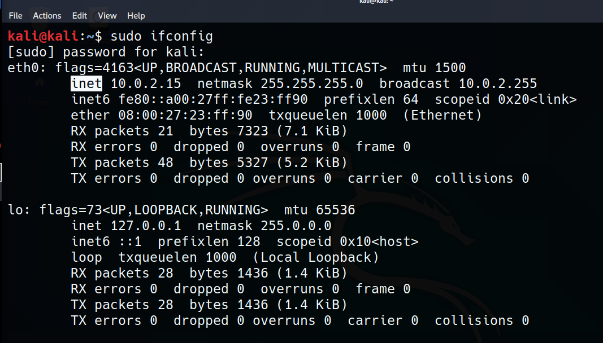

command: ifconfig
inet: my ip adress
inet6: my ipv6 adress
eigth bit . eight bit. eight bit = 32 bit therefore we have 2^32~= 4 billion range. so this is the motivation behind ipv6
companies buy this ip ranges and ISP buys from them and sells to you.
How to we use IPv4 despite the fact that our ip adresses run out? So our ip adresses (starts with 192,168 or 10.) is private adressesand these are not an ip adresss that is going to be out in the interweb. These adress is known only you.

all devices we have use private ip adress in class a b or c well outside of this classes in loopback we have ip adresses which are bought by a company etc. and our private adresses is directed to our loopback ip adress. And this is the ip adress from interweb which has 4 billion range.

ip adresses are layer 3 protocols and layer 3 is a router. So when we route traffic we route via an IP address.